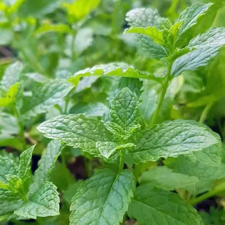
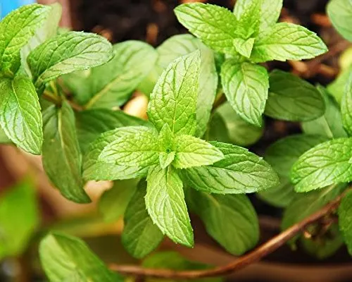
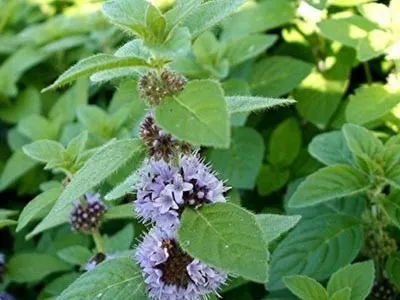
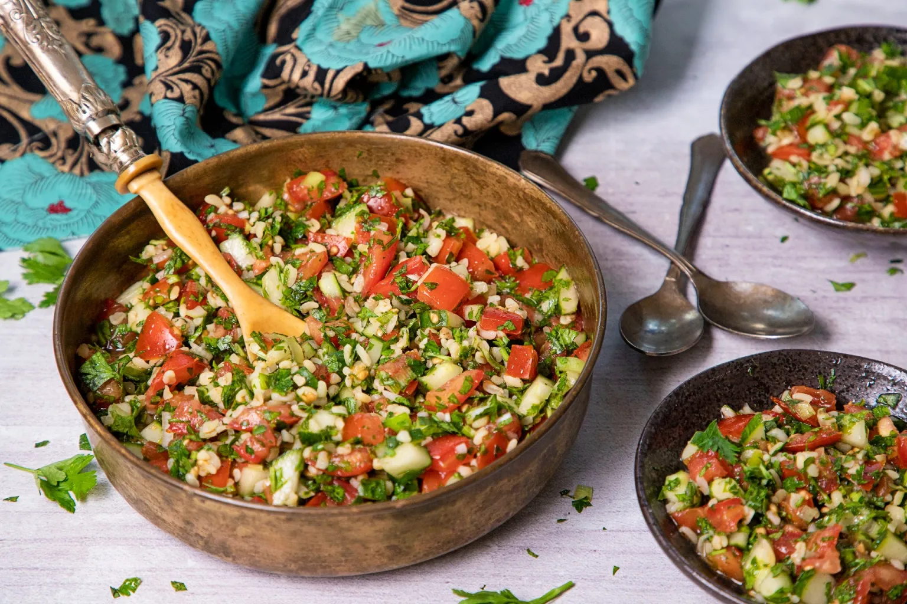
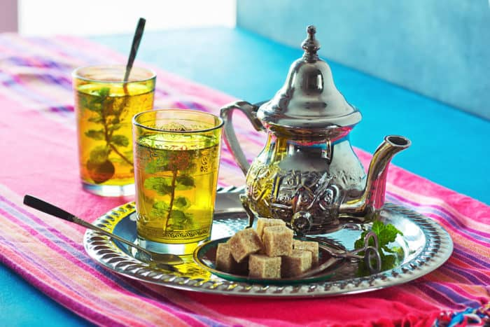
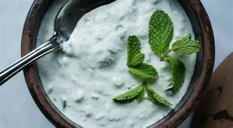

A hortelã tem suas raízes fincadas na região do Mediterrâneo e em partes da Ásia, sendo utilizada pela humanidade há milênios. Sua história é um misto de utilidade prática e lenda:
A hortelã é conhecida por ser "invasiva" — se você der um centímetro, ela toma o jardim inteiro. Por isso, muitos preferem cultivá-la em vasos.
Ocorre geralmente no verão. As flores são pequenas, dispostas em espigas, e variam entre o branco, lilás e o roxo claro. Elas são excelentes para atrair polinizadores, como abelhas e borboletas.
Existem mais de 25 espécies de Mentha, mas as três mais comuns são:
| Espécie | Nome Comum | Características |
|---|---|---|
| Mentha spicata | Hortelã-comum / Erva-boa | Folhas rugosas, sabor suave. Muito usada em sucos e saladas. |
| Mentha piperita | Hortelã-pimenta | Cruzamento natural. Sabor picante e alto teor de mentol. Ideal para chás e fins medicinais. |
| Mentha arvensis | Hortelã-do-campo | Porte menor, muito rica em óleo essencial. Comum na indústria farmacêutica. |



A hortelã é uma potência de micronutrientes em poucas calorias.
O segredo deste prato não é o trigo, mas a abundância de ervas frescas.
Ingredientes: 1 xícara de trigo para quibe (hidratado), 3 tomates picados, 2 pepinos japoneses picados, 2 maços de salsinha, 1 maço de hortelã fresca, suco de 2 limões, azeite, sal e pimenta-do-reino.
Modo de Preparo: Pique a salsinha e a hortelã bem fininho (não use processador para não amargar). Misture todos os ingredientes em uma tigela grande. Tempere generosamente com azeite e limão. Deixe descansar por 20 minutos na geladeira antes de servir.
Visual Esperado: Uma salada vibrantemente verde, com pequenos pontos vermelhos do tomate, servida sobre folhas de alface romana.

Um clássico da hospitalidade do Norte da África.
Ingredientes: 1 colher de sopa de chá verde (tipo Gunpowder), 5 xícaras de água fervente, 1 punhado grande de hortelã fresca, açúcar a gosto (tradicionalmente é bem doce).
Modo de Preparo: Escalde o bule. Coloque o chá verde e um pouco de água fervente; descarte a água após 1 minuto para "limpar" as folhas. Adicione a hortelã, o açúcar e o restante da água. Deixe em infusão por 5 minutos.
Dica: Sirva vertendo o chá de uma altura considerável para criar uma espuminha no copo.
Visual Esperado: Líquido âmbar translúcido em copos de vidro decorados, com ramos de hortelã fresca mergulhados.

Perfeito para acompanhar carnes grelhadas ou falafel.
Ingredientes: 1 pote de iogurte natural sem açúcar, ½ xícara de hortelã picada, 1 dente de alho ralado, suco de ½ limão, sal e um fio de azeite.
Modo de Preparo: Em uma tigela, misture o iogurte com o alho e o limão. Adicione a hortelã picada e misture bem. Finalize com sal e azeite.
Dica: Adicione pepino ralado e espremido para uma versão mais refrescante.
Visual Esperado: Um creme branco aveludado salpicado com pedacinhos verdes brilhantes de hortelã.

LORENZI, Harri; MATOS, F. J. Abreu. Plantas Medicinais no Brasil: nativas e exóticas. Nova Odessa, SP: Instituto Plantarum, 2008.
SOUZA, V. C.; LORENZI, H. Botânica Sistemática: Guia ilustrado para identificação das famílias de Angiospermas da flora brasileira. Instituto Plantarum, 2012.
McGEE, Harold. On Food and Cooking: The Science and Lore of the Kitchen. Scribner, 2004 (Edição revisada).
USDA (United States Department of Agriculture). FoodData Central: Peppermint/Spearmint nutritional profile.